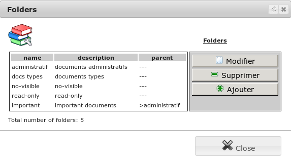

Configuration¶
The menu Management/Modules (conf.)/Folders you have at your disposal a set of tools to configure document management.
Folders¶
In this screen, you can create or edit folders to sort your documents.

In combining some folders with other sub-folders, you can define you in a ranking tree.
For each folder, you associate some permission groups to the visualization and modification of files. Only users belonging to group viewers can consult the documents of this category. Only users belonging to group modifiers can change the documents of this category.